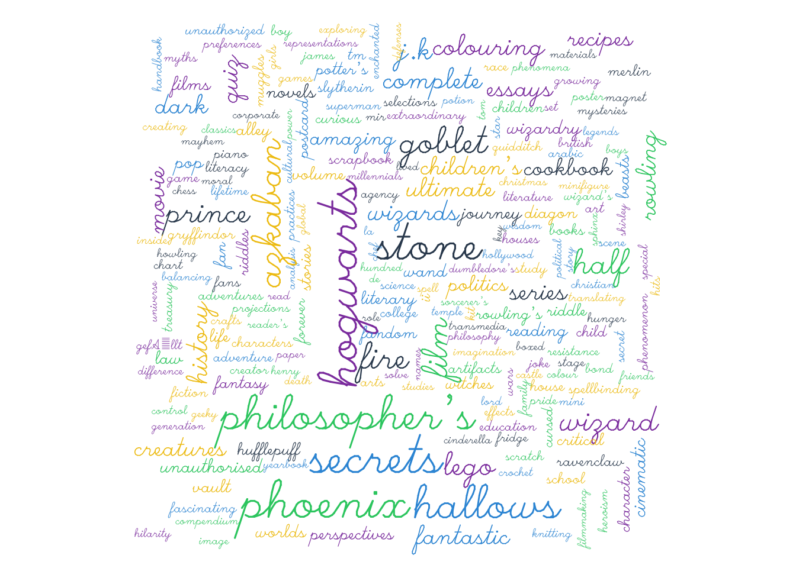
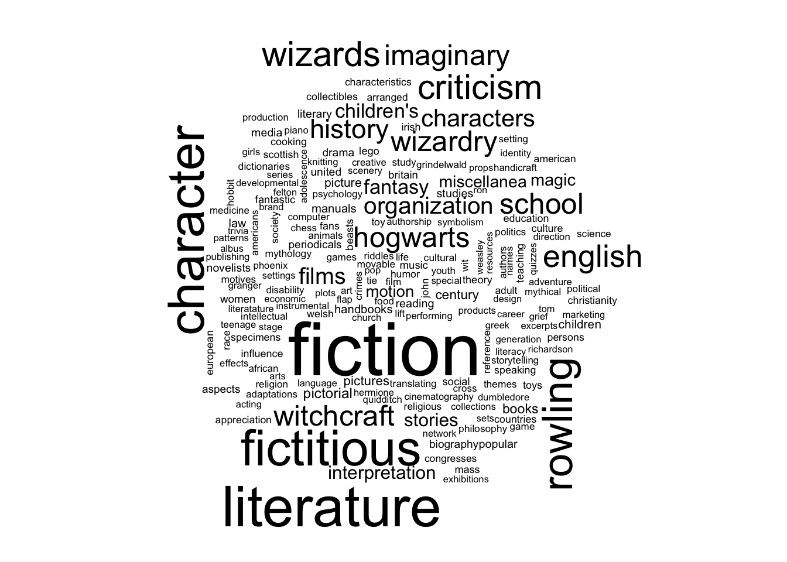
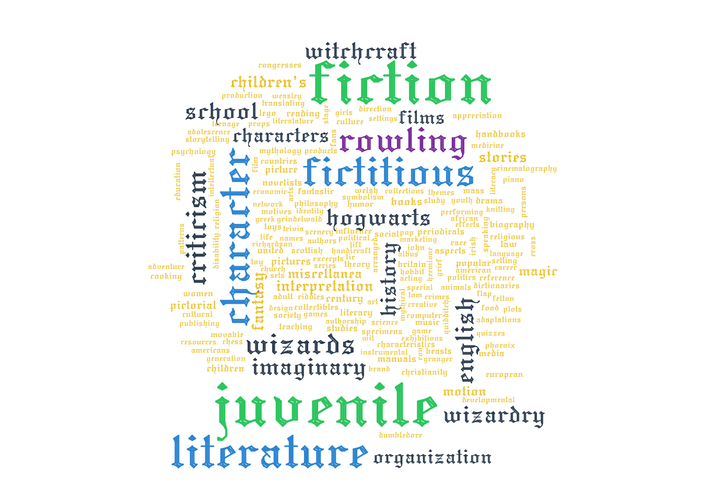
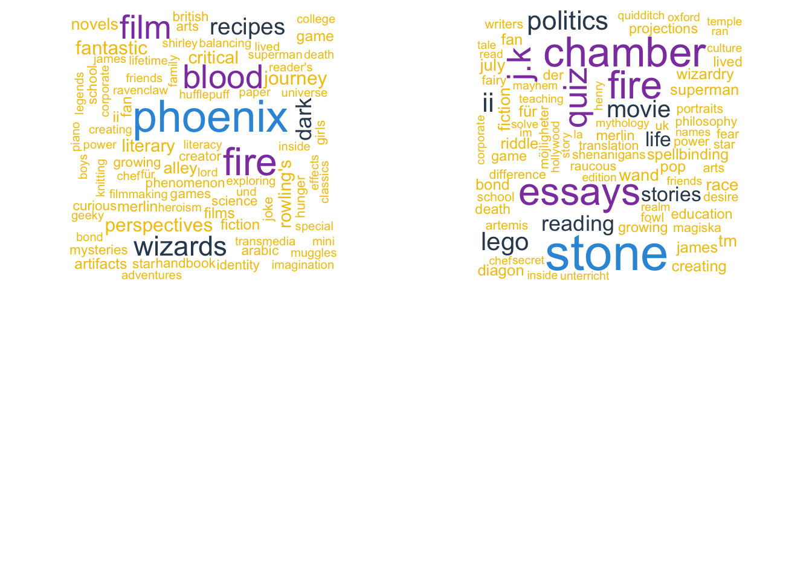
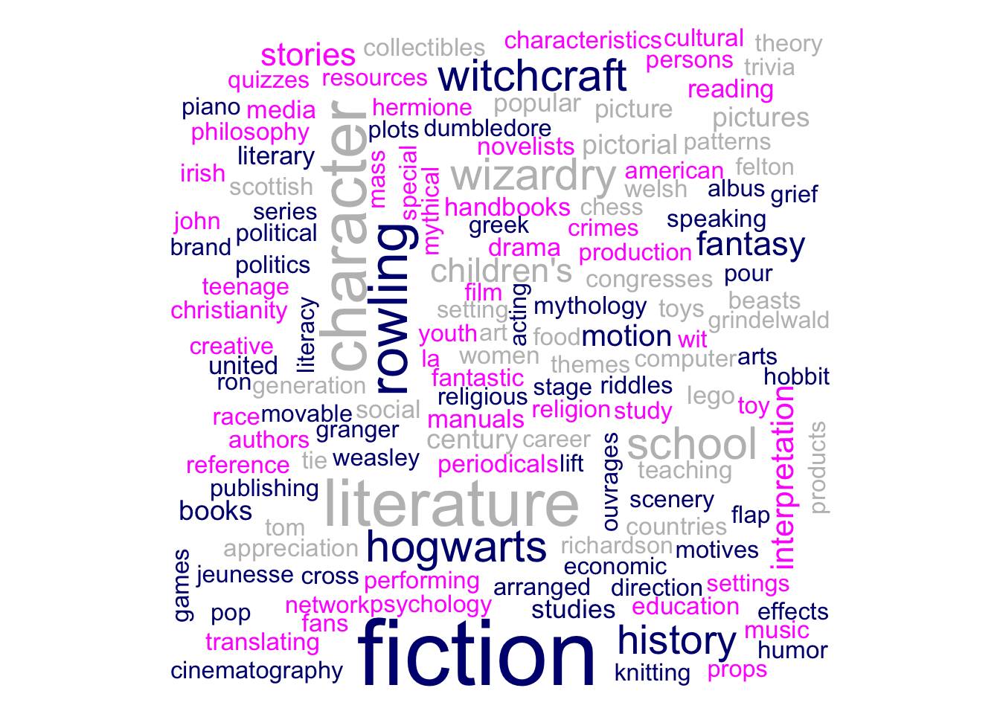
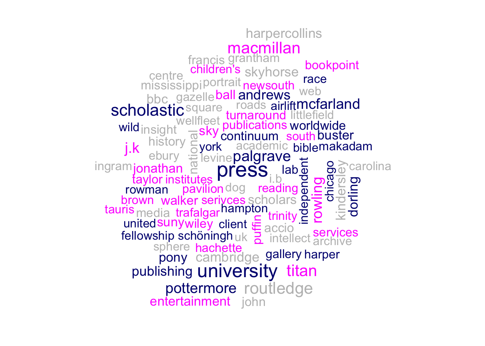

my_url <- "https://github.com/locusclassicus/text_analysis_2024/raw/main/files/HP.zip"
download.file(url = my_url, destfile = "../files/HP.zip")4 Циклы, условия, функции
В этом уроке мы познакомимся с итерационными конструкциями и функционалами, т.е. такими функциями, которые принимают в качестве аргумента другую функцию. Они нужны для того, чтобы можно было что-то сделать много раз: например, прочитать сразу 100 файлов из директории, построить и сохранить одной командой несколько графиков или сделать множество случайных выборок из большого текстового корпуса.
Общее правило таково: если вы скопировали кусок кода больше трех раз, то самое время задуматься об итерации. Это позволит избежать ошибок при копировании и сделает код более легким и читаемым.
4.1 Датасет
В этом уроке мы исследуем датасет “Гарри Поттер”, который представляет собой набор файлов .csv, содержащих метаданные о ресурсах из коллекций Британской библиотеки, связанных с Гарри Поттером. Первоначально он был выпущен к 20-летию публикации книги «Гарри Поттер и философский камень» 26 июня 2017 года и с тех пор ежегодно обновлялся. Всего в датасете пять файлов, каждый из которых содержит разное представление данных.
Датасет до 2023 г. был доступен на сайте Британской библиотеки (https://www.bl.uk/); в репозитории курса сохранена его копия. Скачаем архив.
После этого переходим в директорию с архивом и распаковываем его.
unzip("../files/HP.zip")Сохраним список всех файлов с расширением .csv, используя подходящую функцию из base R.
my_files <- list.files("../files/HP", pattern = ".csv", full.names = TRUE)
my_files[1] "../files/HP/classification.csv" "../files/HP/names.csv"
[3] "../files/HP/records.csv" "../files/HP/titles.csv"
[5] "../files/HP/topics.csv" 4.2 Векторизованные вычисления
Хорошая новость: многие функции в R уже векторизованы, и если необходимо применить функцию к каждому элементу вектора, в большинстве случаев достаточно просто вызвать функцию. Например, у нас есть символьный вектор, и мы хотим узнать количество символов в каждом слове.
homer <- c("в", "мысли", "ему", "то", "вложила", "богиня", "державная", "гера")Для каждого компонента вектора необходимо выполнить одну итерацию цикла, в нашем случае – применить функцию nchar(). В некоторых языках программирования это делается как-то так:
for(i in homer) print(nchar(i))[1] 1
[1] 5
[1] 3
[1] 2
[1] 7
[1] 6
[1] 9
[1] 4Мы написали цикл for, который считает количество букв для каждого слова в векторе. Как видно, все сработало. Но в R это избыточно, потому что nchar() уже векторизована:
nchar(homer)[1] 1 5 3 2 7 6 9 4Лишний цикл может замедлить вычисления. Проверим.
library(tictoc)
# способ первый
tic()
for(i in homer) print(nchar(i))
toc()
# 0.075 sec elapsed
# способ второй
tic()
nchar(homer)
toc()
# 0.017 sec elapsedОдин из главных принципов программирования на R гласит, что следует обходиться без циклов, а если это невозможно, то циклы должны быть простыми.
— Нормат Мэтлофф
Для работы со списками циклы тоже чаще всего избыточны. Для случаев, когда надо применить какую-то функцию ко всем элементам списка, в базовом R для используются функционалы семейства _apply(), а в tidyverse их с успехом заменяет семейство map_() из пакета {purrr}.
4.3 Пакет {purrr}
Разработчики предупреждают, что потребуется время, чтобы овладеть этим инструментом (Wickham и Grolemund 2016).
You should never feel bad about using a loop instead of a map function. The map functions are a step up a tower of abstraction, and it can take a long time to get your head around how they work.
— Hadley Wickham & Garrett Grolemund
В семействе функций map_ из этого пакета всего 23 вариации. Вот основные из них:
map()map_lgl()map_int()map_dbl()map_chr()
Все они принимают на входе данные и функцию (или формулу), которую следует к ним применить, и возвращают результат в том виде, который указан после подчеркивания. Просто map() вернет список, а map_int() – целочисленный вектор, и т.д.
4.4 map() & map_int()
Для того, чтобы прочесть все файлы одним вызовом функции, используем map(). В качестве аргументов передаем список файлов, функцию read_csv() и аргумент этой функции col_types.
library(tidyverse)Warning: package 'ggplot2' was built under R version 4.5.2Warning: package 'readr' was built under R version 4.5.2# чтение файлов
HP <- map(my_files, read_csv, show_col_types = FALSE)Объект HP – это список. В нем пять элементов, так как на входе у нас было пять файлов. Для удобства назначаем имена элементам списка.
names_short <- list.files("../files/HP", pattern = ".csv") |>
str_remove(".csv")
names_short[1] "classification" "names" "records" "titles"
[5] "topics" # присваиваем имена элементам списка
names(HP) <- names_shortДля начала узнаем число рядов в каждой таблице. На выходе мы ожидаем целое число, поэтому используем map_int(). Функция вернет именованный вектор. Чтобы избавиться от имен, можно использовать unname().
map_int(HP, nrow)classification names records titles topics
567 885 755 962 2198 4.5 pluck() & map_df()
Каждую таблицу можно также рассматривать как список (переменных) и применять функции (или их сочетания) к отдельным столбцам. Получить доступ к отдельным таблицам можно при помощи квадратных скобок (HP[["titles"]]) или при помощи функции pluck() из того же пакета {purrr}. Оба способа хороши, но второй удобнее при работе с вложенными списками, которая нас ждет в следующем уроке.
titles <- HP |>
pluck("titles")Теперь узнаем сумму отсутствующих значений в каждом столбце таблицы titles. Здесь .x — это текущий элемент из titles, который последовательно передаётся в функцию, а тильда ( ~ ) обозначает начало выражения-функции. Если вы явно передаёте именованную или анонимную функцию, то тильда не требуется.
map_int(titles, ~sum(is.na(.x))) Title Other titles
0 654
BL record ID Type of resource
0 0
Content type Material type
0 54
BNB number ISBN
363 47
ISSN Name
956 262
Dates associated with name Type of name
853 262
Role All names
617 138
Series title Number within series
753 907
Country of publication Place of publication
28 80
Publisher Date of publication
20 3
Edition Physical description
779 30
Dewey classification BL shelfmark
257 376
Topics Genre
158 499
Languages Notes
55 465 Также узнаем число уникальных значений в каждом столбце и запросим результат в виде таблицы.
map_df(
titles,
~ tibble(
n_unique = n_distinct(.x),
nas = sum(is.na(.x)),
prop_nas = round(nas / nrow(titles),2)
),
.id = "variable"
) |>
arrange(prop_nas) |>
print()# A tibble: 28 × 4
variable n_unique nas prop_nas
<chr> <int> <int> <dbl>
1 Title 698 0 0
2 BL record ID 755 0 0
3 Type of resource 4 0 0
4 Content type 8 0 0
5 Date of publication 34 3 0
6 Publisher 250 20 0.02
7 Country of publication 30 28 0.03
8 Physical description 522 30 0.03
9 ISBN 719 47 0.05
10 Material type 16 54 0.06
# ℹ 18 more rows4.6 Разведывательный анализ
Выясним, на каких языках и когда выходили книги о Гарри Поттере. Но сначала приведем данные в опрятный вид. Там, где языков два, как правило интересен второй (первый - английский); поэтому делим столбец с языками на два и “сплавляем”. Функция coalesce(x, y) возвращает первое не-NA между x иy`.
titles_tidy <- titles |>
select(Title, Name, `Date of publication`, Languages) |>
# избавимся от неправильных имен
rename(
Year = `Date of publication`) |>
# избавимся от NA
filter(!is.na(Year), !is.na(Languages)) |>
# разделим кода с дефисом и преобразуем год
separate(Year, into = c("Year", NA)) |>
mutate(Year = as.integer(Year)) |>
# выбираем, где можно, второй язык
separate(Languages, into = c("Language1", "Language2"), sep = ";") |>
mutate(Language = coalesce(Language2, Language1)) |>
select(-Language1, -Language2)
titles_tidyДля графика выберем несколько языков. Кстати, ни одного перевода на русский в данных Британской библиотеки нет.
titles_tidy |>
add_count(Language) |>
filter(n > 10) |>
select(-n) |>
ggplot(aes(Year, fill = Language)) +
geom_bar(position = "stack") +
xlab(NULL) +
theme_light() +
theme(axis.text.x = element_text(angle = 45)) +
scale_x_continuous(breaks = seq(1997, 2023))Теперь попробуем самостоятельно написать функцию и передать ее map_*().
4.7 Синтаксис функции
Функция и код – не одно и то же. Чтобы стать функцией, кусок кода должен получить имя. Но зачем давать имя коду, который и так работает? Вот три причины, которые приводит Хадли Уикхем:
- у функции есть выразительное имя, которое облегчает понимание кода;
- при изменении требований необходимо обновлять код только в одном месте, а не во многих;
- меньше вероятность случайных ошибок при копировании (например, обновление имени переменной в одном месте, но не в другом)
Writing good functions is a lifetime journey.
— Hadley Wickham
Машине все равно, как вы назовете функцию, но тем, кто будет читать код, не все равно. Имена должны быть информативы (поэтому функция f() – плохая идея). Также не стоит переписывать уже существующие в R имена!
Далее следует определить формальные аргументы и, при желании, значения по умолчанию. Тело функции пишется в фигурных скобках. В конце кода функции располагается команда return(); если ее нет, то функция возвращает последнее вычисленное значение (см. здесь о том, когда что предпочесть).
Написание функций – навык, который можно бесконечно совершенствовать. Начать проще всего с обычного кода. Убедившись, что он работает как надо, вы можете упаковать его в функцию.
Напишем функцию, которая забирает все слова из столбца, считает частотности и строит облако слов. Сначала просто поймем, какой код нам нужен.
library(tidytext)
count_data <- titles_tidy |>
filter(Language == "English") |>
select(Title) |>
unnest_tokens(output = "word", input = "Title") |>
anti_join(stop_words) |>
count(word, sort = TRUE) |>
filter(!str_detect(word, "[0-9]"),
!word %in% c("harry", "potter", "book"))
count_data |>
print()# A tibble: 902 × 2
word n
<chr> <int>
1 magical 50
2 magic 48
3 world 47
4 guide 43
5 hogwarts 38
6 unofficial 38
7 phoenix 37
8 secrets 37
9 stone 35
10 philosopher's 33
# ℹ 892 more rowsТакже построим облако слов.
pal <- c("#f1c40f", "#34495e",
"#8e44ad", "#3498db",
"#2ecc71")
library(wordcloud)Loading required package: RColorBrewerpar(mar = c(1, 1, 1, 1))
wordcloud(count_data$word,
count_data$n,
min.freq = 3,
#max.words = 50,
#scale = c(3, 0.8),
colors = pal,
random.color = TRUE,
rot.per = .2,
vfont=c("script","plain")
)
Мы готовы упаковать наш код в функцию.
column_to_wordcloud <- function(data, colname, ...) {
# загружаем все пакеты
library(tidytext)
library(dplyr)
library(stringr)
library(wordcloud)
# пишем код, подставляя имена переменных
count_data <- data |>
filter(str_detect(Languages, "English")) |>
select(any_of(colname)) |>
unnest_tokens(output = "word", input = colname) |>
anti_join(stop_words) |>
count(word, sort = TRUE) |>
filter(!str_detect(word, "[0-9]"),
!word %in% c("harry", "potter", "book"))
wordcloud(count_data$word,
count_data$n,
...
)
}Попробуем запусть нашу новую функцию.
column_to_wordcloud(titles, "Topics")
Аргумент ... позволяет обращаться к аргументам функции wordcloud, которые мы специально не прописывали.
column_to_wordcloud(titles, "Topics", colors=pal, vfont=c("gothic english","plain"))
Внутри нашей функции есть переменная count_data, которую не видно в глобальном окружении. Это локальная переменная. Область ее видимости – тело функции. Когда функция возвращает управление, переменная исчезает. Обратное неверно: глобальные переменные доступны в теле функции.
4.8 map2(), walk2() & walk2()
Чтобы несколько раз вызывать одну и ту же функцию с двумя аргументами, используется функция map2_*(). Вот простой пример:
var1 <- seq(10, 50, 10)
var2 <- seq(1, 5, 1)
# формула
map2_int(var1, var2, ~.x+.y)[1] 11 22 33 44 55Если сохранять ничего не надо (как в случае с нашим облаком слов), то используются walk() и walk2(). Попробуем.
par(mar = c(0,0,0,0), mfrow = c(1,2))
walk(HP[1:2], column_to_wordcloud, "Title", colors=pal)
В этом случае второй аргумент был одинаков для двух вызовов функции. Если второй аргумент отличается, вызываем walk2().
par(mar = c(0,0,0,0))
walk2(HP[1:2], c("Topics", "Publisher"), column_to_wordcloud, colors = c("navyblue", "magenta", "grey"), random.color = TRUE, scale = c(4,1))

4.9 Условия
Иногда необходимо ограничить выполнение функции неким условием. Короткие условия можно писать в одну строку без фигурных скобок.
word <- "Эйяфьятлайокудль"
if(is.character(word)) toupper(word)[1] "ЭЙЯФЬЯТЛАЙОКУДЛЬ"Более сложные и множественные условия требуют фигурных скобок. Можно сравнить это с условным периодом: протасис (всегда либо TRUE, либо FALSE) в круглых скобках, аподосис в фигурных.
if(is.character(word)) {
toupper(word)
} else {
print("not a character")
}[1] "ЭЙЯФЬЯТЛАЙОКУДЛЬ"Теперь добавим условие внутрь нашей функции.
Вот исходный вариант. На этот раз обойдемся без облака, а только посчитаем статистику для столбца.
column_counts <- function(data, colname) {
# загружаем пакеты
library(dplyr)
library(stringr)
library(tidytext)
# пишем код, подставляя имена переменных
count_data <- data |>
filter(str_detect(Languages, "English")) |>
select(any_of(colname)) |>
unnest_tokens(output = "word", input = colname) |>
anti_join(stop_words) |>
count(word, sort = TRUE)
return(count_data)
}column_counts(titles, "Genre")Дадим пользователю возможность выбрать, хочет ли он удалять стоп-слова.
column_counts <- function(data, colname, remove_stopwords = TRUE) {
library(dplyr)
library(tidytext)
library(stringr)
# базовая обработка
count_data <- data |>
select(any_of(colname)) |>
unnest_tokens(output = "word", input = colname)
# удаляем стоп-слова, если требуется
if (remove_stopwords) {
count_data <- count_data |>
anti_join(stop_words)
}
# частотности и сортировка
count_data <- count_data |>
count(word, sort = TRUE)
return(count_data)
}Применим.
column_counts(titles, "Title", remove_stopwords = FALSE)4.10 Сообщения и остановка
Часто имеет смысл добавить условие остановки или сообщение, которое будет распечатано в консоль при выполнении.
column_counts <- function(data, colname, remove_stopwords = TRUE) {
library(dplyr)
library(tidytext)
library(stringr)
# Условие остановки функции, если такого столбца нет
if (!(colname %in% names(data))) {
stop(paste("Столбец", colname, "не найден в данных!"))
}
# Сообщение о выбранном режиме стоп-слов
if (remove_stopwords) {
message("Стоп-слова будут удалены.")
} else {
message("Стоп-слова НЕ будут удалены.")
}
# базовая обработка
count_data <- data |>
select(any_of(colname)) |>
unnest_tokens(output = "word", input = colname)
# удаляем стоп-слова, если требуется
if (remove_stopwords) {
count_data <- count_data |>
anti_join(stop_words)
}
# частотности и сортировка
count_data <- count_data |>
count(word, sort = TRUE)
return(count_data)
}column_counts(titles, "Genre")column_counts(titles, "Date")Error in column_counts(titles, "Date"): Столбец Date не найден в данных!4.11 Бонус: Интерактивное облако
Интерактивное облако слов можно построить с использованием пакета wordcloud2. Сделаем облако в форме шляпы волшебника!
title_counts <- titles |>
column_counts("Title") |>
rename(freq = n)
title_counts |>
print()# A tibble: 1,439 × 2
word freq
<chr> <int>
1 potter 790
2 harry 787
3 book 78
4 stone 62
5 philosopher's 56
6 magical 50
7 magic 48
8 secrets 48
9 world 48
10 phoenix 45
# ℹ 1,429 more rows# devtools::install_github("lchiffon/wordcloud2")
library(wordcloud2)
wordcloud2(title_counts,
figPath = "./images/hat.png",
size = 1.5,
backgroundColor="black",
color="random-light",
fontWeight = "normal"
)
4.12 Видео
4.13 Домашнее задание
Напишите функцию count_words, которая будет:
- принимать на входе токенизированный (разбитый на слова) текст (символьный вектор!),
- переводить все слова в нижний регистр,
- считать частотность для каждого слова,
- упорядочивать по убыванию,
- возвращать n наиболее частотных слов (без частотностей, только слова!) в виде вектора.
N.B. Эту задачу можно решить разными способами; подойдет любой, если на выходе будут нужные слова. Как вы назовете аргументы функции, неважно. У аргумента для числа возвращаемых слов значение по умолчанию поставьте 10. Имя функции должно быть строго count_words.
Тренироваться можете на векторе languageR::alice, но в сдаваемом файле должна быть только функция.
Вам могут пригодиться функции table, sort, tolower, names – посмотрите документацию, чтобы понять, как они работают.
Файл под названием hw4.R загрузите в GitHub Classroom по ссылке до 11 октября 11:00 мск.
Wickham, Hadley, и Garrett Grolemund. 2016. R for Data Science. O’Reilly. https://r4ds.had.co.nz/index.html.